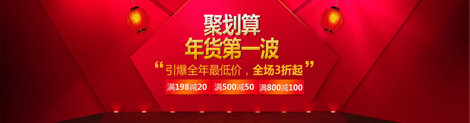
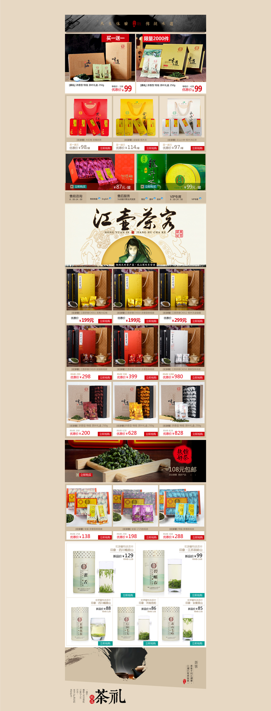

公司背景
宏源馨茶业有限公司于2012年初入驻淘宝商城，作为淘宝新生代茶叶品牌，在百家争鸣的淘宝格局下左右逢源很快打出了自己的名气。
但是，在发展中他们很快意识到视觉效果的重要性以及品牌发展的必要，缘于发展的需求于2012年夏与我司洽谈，一拍即合形成战略合作...
天猫商城整体规划设计
宏源馨品牌的发展我们更侧重视觉上的完美体验。消费的购买欲，完全可以由视觉赤裸的诱惑来引导和催生。
而建立在味道上的文化和生活态度也更能让这个品牌成为电商时代的毋庸置疑的领导者。而视觉就是成就他们辉煌最尖锐的武器。
从页首到页尾给人大品牌大气度的感觉，细节处又很细腻的用品牌文化感染消费者，立体的营销，无形中抓住客户需求提高了产品的转化率。
商城地址
http://hongyuanxin.tmall.com
服务内容
1、线上各销售平台的搭建及入驻
2、品牌定位和市场消费人群定位
3、数据流量分析系统开发
4、用户体验系统开发
5、CRM系统开发
 